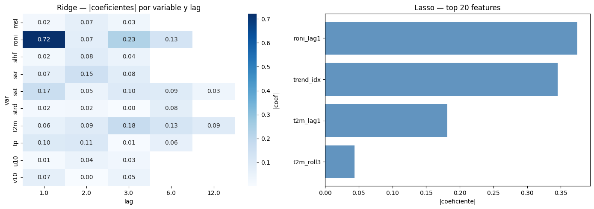
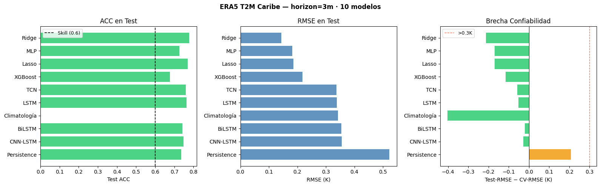
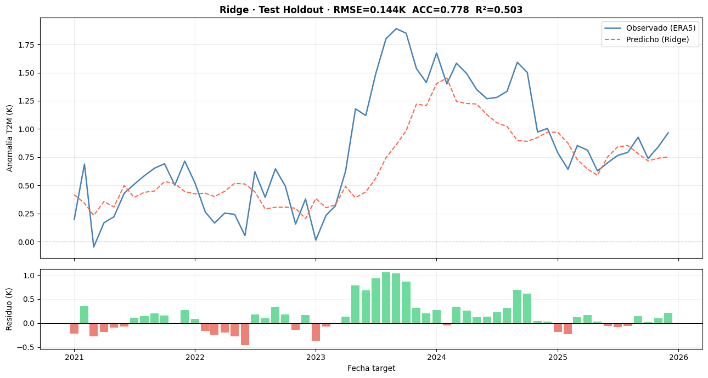
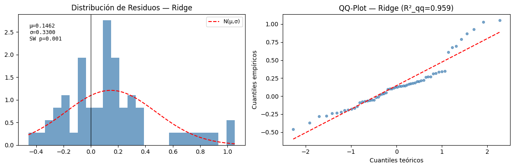
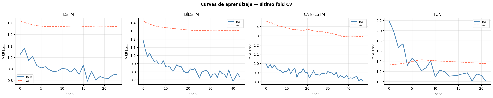

modeling.ipynb — Forecasting Anomalías T2M · ERA5 Caribe (1976–2025)#
Autores: Mateo Gómez · Miguel Jaimes · David Ibáñez — Universidad del Norte, 2026
Pre-requisito: ejecutar preprocessing.ipynb para generar outputs_preprocessing/.
Diseño metodológico#
Familia |
Modelos |
Input |
|---|---|---|
Baselines |
Persistence, Climatología |
— |
Tabular |
Ridge, Lasso, XGBoost, MLP |
Features de lags (X_train/val/test) |
Secuencial DL |
LSTM, BiLSTM, CNN-LSTM, TCN |
Secuencias sobre concat(train+val+test), evaluadas por splits de target |
Las dos familias (Tabular y DL) usan representaciones distintas del mismo dataset:
Tabular: features de lags pre-computadas en preprocessing.
DL: secuencias construidas aquí sobre la serie completa normalizada, con split por índice de target.
La comparación entre familias es válida y metodológicamente correcta, documentada en la tabla de resultados.
Solo datos reales ERA5. Evaluación final en test holdout no visto.
Carga de datos#
import os, json, pickle, warnings
warnings.filterwarnings("ignore")
os.environ["TF_CPP_MIN_LOG_LEVEL"] = "3"
os.environ["TF_ENABLE_ONEDNN_OPTS"] = "0"
import numpy as np
import pandas as pd
import matplotlib.pyplot as plt
import seaborn as sns
from pathlib import Path
from scipy import stats as sp_stats
from sklearn.linear_model import Ridge, Lasso
from sklearn.metrics import mean_squared_error, mean_absolute_error, r2_score
import xgboost as xgb
import tensorflow as tf
from tensorflow import keras
from tensorflow.keras import layers, callbacks
import warnings
warnings.filterwarnings("ignore")
SEED = 42
np.random.seed(SEED)
tf.random.set_seed(SEED)
# XGBoost — siempre CPU para portabilidad
XGB_TREE = "hist"
XGB_DEV = "cpu"
PREP_DIR = Path("outputs_preprocessing")
MODELS_DIR = Path("outputs_models")
MODELS_DIR.mkdir(exist_ok=True)
PLOT_DIR = Path("outputs_plots")
PLOT_DIR.mkdir(exist_ok=True)
assert PREP_DIR.exists(), f"Ejecutar preprocessing.ipynb primero. No se encontró {PREP_DIR}"
print(f" {PREP_DIR} encontrado")
print(f" TF: {tf.__version__} | XGBoost: {xgb.__version__} | CPU-only XGB: {XGB_TREE}")
outputs_preprocessing encontrado
TF: 2.10.0 | XGBoost: 2.1.4 | CPU-only XGB: hist
# ── Carga de artefactos ───────────────────────────────────────────────────────
seqs = np.load(PREP_DIR / "sequences.npz", allow_pickle=True)
X_train, y_train = seqs["X_train"], seqs["y_train"]
X_val, y_val = seqs["X_val"], seqs["y_val"]
X_test, y_test = seqs["X_test"], seqs["y_test"]
y_train_diff = seqs["y_train_diff"]
y_val_diff = seqs["y_val_diff"]
y_test_diff = seqs["y_test_diff"]
y_train_raw = seqs["y_train_raw"]
y_val_raw = seqs["y_val_raw"]
y_test_raw = seqs["y_test_raw"]
y_train_diff_raw = seqs["y_train_diff_raw"]
y_val_diff_raw = seqs["y_val_diff_raw"]
y_test_diff_raw = seqs["y_test_diff_raw"]
# Cargar y_base para reconstrucción
y_train_base_raw = seqs["y_train_base_raw"]
y_val_base_raw = seqs["y_val_base_raw"]
y_test_base_raw = seqs["y_test_base_raw"]
# Fechas del target (input_date + horizon)
td_train = pd.to_datetime(seqs["target_dates_train"])
td_val = pd.to_datetime(seqs["target_dates_val"])
td_test = pd.to_datetime(seqs["target_dates_test"])
with open(PREP_DIR / "scaler_X.pkl", "rb") as f: scaler_X = pickle.load(f)
with open(PREP_DIR / "scaler_y.pkl", "rb") as f: scaler_y = pickle.load(f)
with open(PREP_DIR / "cv_splits.pkl","rb") as f: cv_splits = pickle.load(f)
with open(PREP_DIR / "pipeline_metadata.json") as f: META = json.load(f)
with open(PREP_DIR / "scaler_y_diff.pkl", "rb") as f: scaler_y_diff = pickle.load(f)
HORIZON = META["horizon"]
FEATURE_COLS = META["feature_cols"]
N_FEATURES = META["n_features"]
TARGET = META["target"]
# Validaciones
for name, X, y in [("train",X_train,y_train),("val",X_val,y_val),("test",X_test,y_test)]:
assert len(X)==len(y) and not np.isnan(X).any() and not np.isnan(y).any(), f"Error en {name}"
for i,(tr,va) in enumerate(cv_splits):
assert tr.max() < len(X_train) and va.max() < len(X_train)
print(f" Artefactos cargados")
print(f" HORIZON : {HORIZON}m")
print(f" N_FEATURES : {N_FEATURES}")
print(f" X_train : {X_train.shape} target: {td_train[0].date()} → {td_train[-1].date()}")
print(f" X_val : {X_val.shape} target: {td_val[0].date()} → {td_val[-1].date()}")
print(f" X_test : {X_test.shape} target: {td_test[0].date()} → {td_test[-1].date()}")
print(f" Block CV : {len(cv_splits)} folds")
Artefactos cargados
HORIZON : 3m
N_FEATURES : 44
X_train : (465, 44) target: 1977-04-01 → 2015-12-01
X_val : (60, 44) target: 2016-01-01 → 2020-12-01
X_test : (60, 44) target: 2021-01-01 → 2025-12-01
Block CV : 5 folds
Funciones#
# ── Métricas ─────────────────────────────────────────────────────────────────
def descalar(y_sc):
return scaler_y.inverse_transform(np.array(y_sc).reshape(-1,1)).ravel()
def compute_metrics(y_true_sc, y_pred_sc, label=""):
"""Métricas en escala real (K). ACC > 0.6 → skill climático operacional."""
yt = descalar(y_true_sc); yp = descalar(y_pred_sc)
rmse = float(np.sqrt(mean_squared_error(yt, yp)))
mae = float(mean_absolute_error(yt, yp))
r2 = float(r2_score(yt, yp))
a = yt - yt.mean(); b = yp - yp.mean()
acc = float(np.sum(a*b) / (np.sqrt(np.sum(a**2)*np.sum(b**2)) + 1e-10))
if label:
print(f" {label:<28} RMSE={rmse:.4f}K MAE={mae:.4f}K R²={r2:.4f} ACC={acc:.4f}")
return {"rmse": rmse, "mae": mae, "r2": r2, "acc": acc}
def compute_metrics_real(y_true_K, y_pred_K, label=""):
"""Métricas cuando ambos arrays ya están en K (no descala internamente).
Usar exclusivamente para modelos DL tras reconstrucción base + diff."""
rmse = float(np.sqrt(mean_squared_error(y_true_K, y_pred_K)))
mae = float(mean_absolute_error(y_true_K, y_pred_K))
r2 = float(r2_score(y_true_K, y_pred_K))
a = y_true_K - y_true_K.mean()
b = y_pred_K - y_pred_K.mean()
acc = float(np.sum(a*b) / (np.sqrt(np.sum(a**2)*np.sum(b**2)) + 1e-10))
if label:
print(f" {label:<28} RMSE={rmse:.4f}K MAE={mae:.4f}K R²={r2:.4f} ACC={acc:.4f}")
return {"rmse": rmse, "mae": mae, "r2": r2, "acc": acc}
def cv_score_sklearn(model_fn, X, y, splits):
fold_rmse = []
for fold, (tr, va) in enumerate(splits):
m = model_fn(); m.fit(X[tr], y[tr])
r = compute_metrics(y[va], m.predict(X[va]))["rmse"]
fold_rmse.append(r); print(f" Fold {fold+1} CV-RMSE={r:.4f}K")
mean_r = float(np.mean(fold_rmse))
print(f" CV-RMSE medio {mean_r:.4f}K")
return mean_r
def get_callbacks(monitor="val_loss", patience=20):
return [
callbacks.EarlyStopping(monitor=monitor, patience=patience,
restore_best_weights=True, verbose=0),
callbacks.ReduceLROnPlateau(monitor=monitor, factor=0.5,
patience=patience//2, min_lr=1e-6, verbose=0),
]
results = {}
print(" Funciones de métricas y utilidades definidas")
Funciones de métricas y utilidades definidas
Modelos baselines#
# ── Baselines ─────────────────────────────────────────────────────────────────
# Persistence correcta: ŷ(t+h) = y(t) → usar el último valor de train/val como seed
# En escala normalizada: y_persist_val[i] = y en la posición i - h (si i >= h),
# o la última observación de train disponible (para i < h).
h = HORIZON
y_persist_val = np.concatenate([y_train[-h:], y_val[:-h]])[:len(y_val)]
y_persist_test = np.concatenate([y_val[-h:], y_test[:-h]])[:len(y_test)]
print("── Persistence (ŷ(t+h) = y(t)) ──")
pers_val = compute_metrics(y_val, y_persist_val, "Persistence Val")
pers_test = compute_metrics(y_test, y_persist_test, "Persistence Test")
results["Persistence"] = {"cv_rmse": pers_val["rmse"], "val": pers_val, "test": pers_test}
print("\n── Climatología (anomalía=0) ──")
def zero_scaled(n):
return scaler_y.transform(np.zeros((n,1))).ravel()
clim_val = compute_metrics(y_val, zero_scaled(len(y_val)), "Climatología Val")
clim_test = compute_metrics(y_test, zero_scaled(len(y_test)), "Climatología Test")
results["Climatología"] = {"cv_rmse": clim_val["rmse"], "val": clim_val, "test": clim_test}
print(f"\n Referencia Persistence Val-RMSE = {pers_val['rmse']:.4f}K")
── Persistence (ŷ(t+h) = y(t)) ──
Persistence Val RMSE=0.3134K MAE=0.2491K R²=-0.1590 ACC=0.4499
Persistence Test RMSE=0.3746K MAE=0.2936K R²=0.4649 ACC=0.7357
── Climatología (anomalía=0) ──
Climatología Val RMSE=0.7453K MAE=0.6861K R²=-5.5542 ACC=0.0000
Climatología Test RMSE=0.9622K MAE=0.8161K R²=-2.5301 ACC=0.0000
Referencia Persistence Val-RMSE = 0.3134K
Modelos tabulares#
# ── Ridge ──────────────────────────────────────────────────────────────────────
print("── Ridge ──")
ridge_cv = cv_score_sklearn(lambda: Ridge(alpha=10.0), X_train, y_train, cv_splits)
ridge_final = Ridge(alpha=10.0); ridge_final.fit(X_train, y_train)
ridge_val = compute_metrics(y_val, ridge_final.predict(X_val), "Ridge Val")
results["Ridge"] = {"cv_rmse": ridge_cv, "val": ridge_val, "model": ridge_final}
print("\n── Lasso ──")
lasso_cv = cv_score_sklearn(
lambda: Lasso(alpha=0.1, max_iter=5000, random_state=SEED), X_train, y_train, cv_splits)
lasso_final = Lasso(alpha=0.1, max_iter=5000, random_state=SEED); lasso_final.fit(X_train, y_train)
lasso_val = compute_metrics(y_val, lasso_final.predict(X_val), "Lasso Val")
n_nonzero = (np.abs(lasso_final.coef_) > 1e-6).sum()
print(f" Lasso features seleccionadas: {n_nonzero}/{len(lasso_final.coef_)}")
results["Lasso"] = {"cv_rmse": lasso_cv, "val": lasso_val, "model": lasso_final}
── Ridge ──
Fold 1 CV-RMSE=0.4268K
Fold 2 CV-RMSE=0.2537K
Fold 3 CV-RMSE=0.3123K
Fold 4 CV-RMSE=0.2233K
Fold 5 CV-RMSE=0.5631K
CV-RMSE medio 0.3558K
Ridge Val RMSE=0.2348K MAE=0.1882K R²=0.3494 ACC=0.6750
── Lasso ──
Fold 1 CV-RMSE=0.4281K
Fold 2 CV-RMSE=0.2197K
Fold 3 CV-RMSE=0.2870K
Fold 4 CV-RMSE=0.2638K
Fold 5 CV-RMSE=0.5853K
CV-RMSE medio 0.3568K
Lasso Val RMSE=0.2757K MAE=0.2339K R²=0.1031 ACC=0.6193
Lasso features seleccionadas: 4/44
# ── Heatmap coeficientes Ridge y top-features Lasso ──────────────────────────
coefs = np.abs(ridge_final.coef_)
if len(coefs) == len(FEATURE_COLS):
df_c = pd.DataFrame({"feature": FEATURE_COLS, "coef": coefs})
df_c["var"] = df_c["feature"].str.extract(r"^([a-z0-9]+)_")
df_c["lag"] = pd.to_numeric(df_c["feature"].str.extract(r"lag(\d+)")[0], errors="coerce")
pivot = df_c.dropna(subset=["lag"]).pivot_table(
index="var", columns="lag", values="coef", aggfunc="mean")
fig, axes = plt.subplots(1, 2, figsize=(14, 5))
if not pivot.empty:
sns.heatmap(pivot, ax=axes[0], cmap="Blues", annot=True, fmt=".2f",
cbar_kws={"label": "|coef|"})
axes[0].set_title("Ridge — |coeficientes| por variable y lag")
df_lasso_nz = df_c[np.abs(lasso_final.coef_) > 1e-6].copy()
df_lasso_nz["coef_abs"] = np.abs(lasso_final.coef_[np.abs(lasso_final.coef_) > 1e-6])
df_lasso_nz = df_lasso_nz.sort_values("coef_abs").tail(20)
axes[1].barh(df_lasso_nz["feature"], df_lasso_nz["coef_abs"], color="steelblue", alpha=0.85)
axes[1].set_title("Lasso — top 20 features"); axes[1].set_xlabel("|coeficiente|")
plt.tight_layout()
plt.savefig(PLOT_DIR / "fig_coeficientes_lineales.png", dpi=150, bbox_inches="tight")
plt.show()

# ── XGBoost (CPU, tree_method=hist) ──────────────────────────────────────────
print("── XGBoost (tree_method=hist, device=cpu) ──")
# Parámetros optimizados para dataset pequeño
xgb_params = dict(
n_estimators=500,
learning_rate=0.05,
max_depth=3,
subsample=0.8,
colsample_bytree=0.6,
min_child_weight=5,
reg_alpha=0.1,
reg_lambda=2.0,
early_stopping_rounds=30,
tree_method="hist",
device="cpu",
random_state=SEED,
)
# Cross-validation
fold_rmse, best_iters = [], []
for fold, (tr, va) in enumerate(cv_splits):
m = xgb.XGBRegressor(**xgb_params)
m.fit(
X_train[tr], y_train[tr],
eval_set=[(X_train[va], y_train[va])],
verbose=False
)
preds = m.predict(X_train[va])
r = compute_metrics(y_train[va], preds)["rmse"]
fold_rmse.append(r)
best_iters.append(m.best_iteration)
print(f" Fold {fold+1} CV-RMSE={r:.4f}K best_iter={m.best_iteration}")
xgb_cv = float(np.mean(fold_rmse))
print(f" CV-RMSE medio {xgb_cv:.4f}K")
# Modelo final (con early stopping usando validation set)
xgb_final = xgb.XGBRegressor(**xgb_params)
xgb_final.fit(
X_train, y_train,
eval_set=[(X_val, y_val)],
verbose=False
)
xgb_val = compute_metrics(y_val, xgb_final.predict(X_val), "XGBoost Val")
results["XGBoost"] = {
"cv_rmse": xgb_cv,
"val": xgb_val,
"model": xgb_final
}
── XGBoost (tree_method=hist, device=cpu) ──
Fold 1 CV-RMSE=0.4141K best_iter=68
Fold 2 CV-RMSE=0.2055K best_iter=3
Fold 3 CV-RMSE=0.3253K best_iter=70
Fold 4 CV-RMSE=0.1989K best_iter=92
Fold 5 CV-RMSE=0.5157K best_iter=11
CV-RMSE medio 0.3319K
XGBoost Val RMSE=0.2607K MAE=0.2018K R²=0.1982 ACC=0.5201
# ── MLP (tabular) ─────────────────────────────────────────────────────────────
def build_mlp():
inp = keras.Input(shape=(N_FEATURES,))
x = layers.Dense(64, activation="relu")(inp)
x = layers.BatchNormalization()(x)
x = layers.Dropout(0.4)(x)
x = layers.Dense(32, activation="relu")(x)
x = layers.BatchNormalization()(x)
x = layers.Dropout(0.3)(x)
out = layers.Dense(1)(x)
m = keras.Model(inp, out)
m.compile(optimizer=keras.optimizers.Adam(1e-3), loss="mse")
return m
print("── MLP ──")
fold_rmse = []
for fold, (tr, va) in enumerate(cv_splits):
print(f" Fold {fold+1}...", end=" ", flush=True)
m = build_mlp()
m.fit(X_train[tr], y_train[tr], validation_data=(X_train[va], y_train[va]),
epochs=200, batch_size=32, verbose=0, callbacks=get_callbacks())
r = compute_metrics(y_train[va], m.predict(X_train[va], verbose=0).flatten())["rmse"]
fold_rmse.append(r); print(f"CV-RMSE={r:.4f}K")
keras.backend.clear_session()
mlp_cv = float(np.mean(fold_rmse))
print(f" CV-RMSE medio {mlp_cv:.4f}K")
mlp_final = build_mlp()
mlp_final.fit(X_train, y_train, epochs=300, batch_size=32, verbose=0,
callbacks=get_callbacks("loss", 30))
mlp_val = compute_metrics(y_val, mlp_final.predict(X_val, verbose=0).flatten(), "MLP Val")
results["MLP"] = {"cv_rmse": mlp_cv, "val": mlp_val, "model": mlp_final}
── MLP ──
Fold 1... CV-RMSE=0.4485K
Fold 2... CV-RMSE=0.2741K
Fold 3... CV-RMSE=0.3502K
Fold 4... CV-RMSE=0.2873K
Fold 5... WARNING:tensorflow:5 out of the last 13 calls to <function Model.make_predict_function.<locals>.predict_function at 0x000001E4536F8790> triggered tf.function retracing. Tracing is expensive and the excessive number of tracings could be due to (1) creating @tf.function repeatedly in a loop, (2) passing tensors with different shapes, (3) passing Python objects instead of tensors. For (1), please define your @tf.function outside of the loop. For (2), @tf.function has reduce_retracing=True option that can avoid unnecessary retracing. For (3), please refer to https://www.tensorflow.org/guide/function#controlling_retracing and https://www.tensorflow.org/api_docs/python/tf/function for more details.
CV-RMSE=0.3963K
CV-RMSE medio 0.3513K
WARNING:tensorflow:5 out of the last 13 calls to <function Model.make_predict_function.<locals>.predict_function at 0x000001E5818C2700> triggered tf.function retracing. Tracing is expensive and the excessive number of tracings could be due to (1) creating @tf.function repeatedly in a loop, (2) passing tensors with different shapes, (3) passing Python objects instead of tensors. For (1), please define your @tf.function outside of the loop. For (2), @tf.function has reduce_retracing=True option that can avoid unnecessary retracing. For (3), please refer to https://www.tensorflow.org/guide/function#controlling_retracing and https://www.tensorflow.org/api_docs/python/tf/function for more details.
MLP Val RMSE=0.2461K MAE=0.1852K R²=0.2855 ACC=0.6306
Modelos de deep learning#
# ── Construcción de secuencias DL ─────────────────────────────────────────────
# CORRECCIÓN: las secuencias se construyen sobre TODA la serie (train+val+test)
# para que las secuencias de test tengan contexto de meses anteriores.
# El split se hace por índice del TARGET (tidx), no por índice de input.
N_LAGS = 24
INPUT_SEQ = (N_LAGS, N_FEATURES)
X_full = np.concatenate([X_train, X_val, X_test], axis=0)
y_full_diff = np.concatenate([y_train_diff, y_val_diff, y_test_diff], axis=0)
y_full_raw = np.concatenate([y_train_raw, y_val_raw, y_test_raw], axis=0)
y_full_base = np.concatenate([y_train_base_raw, y_val_base_raw, y_test_base_raw], axis=0)
n_tr_full = len(X_train)
n_va_full = len(X_train) + len(X_val)
def build_sequences(Xf, yf, n_lags, horizon):
Xo, yo, tidx = [], [], []
for i in range(len(Xf) - n_lags - horizon + 1):
Xo.append(Xf[i:i+n_lags])
yo.append(yf[i+n_lags+horizon-1])
tidx.append(i+n_lags+horizon-1)
return (np.array(Xo, dtype=np.float32),
np.array(yo, dtype=np.float32),
np.array(tidx))
X_seq, y_seq_diff, tidx = build_sequences(X_full, y_full_diff, N_LAGS, HORIZON)
# Split por índice del TARGET en X_full
mask_tr = tidx < n_tr_full
mask_va = (tidx >= n_tr_full) & (tidx < n_va_full)
mask_te = tidx >= n_va_full
X_tr_seq, y_tr_seq_diff = X_seq[mask_tr], y_seq_diff[mask_tr]
X_va_seq, y_va_seq_diff = X_seq[mask_va], y_seq_diff[mask_va]
X_te_seq, y_te_seq_diff = X_seq[mask_te], y_seq_diff[mask_te]
# Block CV secuencial sobre X_tr_seq
def make_seq_cv(n, n_splits=5, gap=12):
block = (n - gap*n_splits) // (n_splits+1)
splits = []
for i in range(n_splits):
te = block*(i+1); vs = te+gap; ve = min(vs+block, n)
if ve > vs: splits.append((np.arange(0, te), np.arange(vs, ve)))
return splits, block
cv_seq, block_seq = make_seq_cv(len(X_tr_seq))
print(f"Secuencias DL (input_context sobre train+val+test, target split por índice):")
print(f" X_tr_seq : {X_tr_seq.shape} (target en train)")
print(f" X_va_seq : {X_va_seq.shape} (target en val)")
print(f" X_te_seq : {X_te_seq.shape} (target en test, con contexto completo)")
print(f" Block CV secuencial: {len(cv_seq)} folds | gap=12 | block≈{block_seq}")
print(f" Input LSTM: {INPUT_SEQ}")
Secuencias DL (input_context sobre train+val+test, target split por índice):
X_tr_seq : (439, 24, 44) (target en train)
X_va_seq : (60, 24, 44) (target en val)
X_te_seq : (60, 24, 44) (target en test, con contexto completo)
Block CV secuencial: 5 folds | gap=12 | block≈63
Input LSTM: (24, 44)
def dl_cv_seq(build_fn, epochs=200, patience=10):
fold_rmse, fold_hist = [], []
for fold, (tr, va) in enumerate(cv_seq):
print(f" Fold {fold+1}...", end=" ", flush=True)
m = build_fn()
h = m.fit(X_tr_seq[tr], y_tr_seq_diff[tr],
validation_data=(X_tr_seq[va], y_tr_seq_diff[va]),
epochs=epochs, batch_size=32, verbose=0,
callbacks=get_callbacks(patience=patience))
r = compute_metrics(y_tr_seq_diff[va],
m.predict(X_tr_seq[va], verbose=0).flatten())["rmse"]
fold_rmse.append(r); fold_hist.append(h.history)
print(f"CV-RMSE={r:.4f}K ep={len(h.history['loss'])}")
keras.backend.clear_session()
mean_r = float(np.mean(fold_rmse))
print(f" CV-RMSE medio {mean_r:.4f}K")
return mean_r, fold_hist
def train_final_seq(build_fn, epochs=200, patience=15):
m = build_fn()
m.fit(X_tr_seq, y_tr_seq_diff, epochs=epochs, batch_size=32, verbose=0,
callbacks=get_callbacks("loss", patience))
return m
def build_lstm():
inp = keras.Input(shape=INPUT_SEQ)
x = layers.LSTM(
16,
return_sequences=False,
kernel_regularizer=keras.regularizers.l2(1e-4)
)(inp)
x = layers.Dropout(0.4)(x)
x = layers.Dense(
16,
activation="relu",
kernel_regularizer=keras.regularizers.l2(1e-4)
)(x)
x = layers.Dropout(0.4)(x)
out = layers.Dense(1)(x)
m = keras.Model(inp, out)
m.compile(optimizer=keras.optimizers.Adam(5e-4), loss="mse")
return m
print("── LSTM ──")
lstm_cv, lstm_hist = dl_cv_seq(build_lstm)
lstm_f = train_final_seq(build_lstm)
# predicción diferencial sobre VAL
y_pred_diff = lstm_f.predict(X_va_seq, verbose=0).flatten()
# desescalar
y_pred_diff = scaler_y_diff.inverse_transform(
y_pred_diff.reshape(-1,1)).ravel()
# base: t2m(t) — valor en el momento de predicción, NO el target
y_base = y_full_base[tidx[mask_va]]
# reconstrucción
y_pred = y_base + y_pred_diff
# target real: t2m(t+3)
y_true = y_full_raw[tidx[mask_va]] # ← tidx[mask_va], no tidx][mask_va]
lstm_val = compute_metrics_real(y_true, y_pred, "LSTM Val")
results["LSTM"] = {"cv_rmse": lstm_cv, "val": lstm_val,
"model": lstm_f, "hist_cv": lstm_hist}
── LSTM ──
Fold 1... CV-RMSE=0.4068K ep=92
Fold 2... CV-RMSE=0.3893K ep=40
Fold 3... CV-RMSE=0.3875K ep=42
Fold 4... CV-RMSE=0.3172K ep=21
Fold 5... CV-RMSE=0.4472K ep=24
CV-RMSE medio 0.3896K
LSTM Val RMSE=0.2916K MAE=0.2334K R²=-0.0032 ACC=0.4885
# ── BiLSTM ────────────────────────────────────────────────────────────────────
# NOTA METODOLÓGICA: BiLSTM aprende dependencias bidireccionales DENTRO de la
# ventana de entrada (N_LAGS meses históricos). No accede a datos futuros
# respecto al target (que está FUERA de la ventana). Sin leakage temporal.
def build_bilstm():
inp = keras.Input(shape=INPUT_SEQ)
x = layers.Bidirectional(
layers.LSTM(16, return_sequences=False,
kernel_regularizer=keras.regularizers.l2(1e-4))
)(inp)
x = layers.Dropout(0.4)(x)
x = layers.Dense(16, activation="relu",
kernel_regularizer=keras.regularizers.l2(1e-4))(x)
x = layers.Dropout(0.4)(x)
out = layers.Dense(1)(x)
m = keras.Model(inp, out)
m.compile(optimizer=keras.optimizers.Adam(5e-4), loss="mse")
return m
print("── BiLSTM ──")
bilstm_cv, bilstm_hist = dl_cv_seq(build_bilstm)
bilstm_f = train_final_seq(build_bilstm)
# predicción diferencial sobre VAL
y_pred_diff = bilstm_f.predict(X_va_seq, verbose=0).flatten()
# desescalar
y_pred_diff = scaler_y_diff.inverse_transform(
y_pred_diff.reshape(-1,1)).ravel()
# base: t2m(t) — valor en el momento de predicción, NO el target
y_base = y_full_base[tidx[mask_va]]
# reconstrucción
y_pred = y_base + y_pred_diff
# target real: t2m(t+3)
y_true = y_full_raw[tidx[mask_va]] # ← tidx[mask_va], no tidx][mask_va]
bilstm_val = compute_metrics_real(y_true, y_pred, "BiLSTM Val")
results["BiLSTM"] = {
"cv_rmse": bilstm_cv,
"val": bilstm_val,
"model": bilstm_f,
"hist_cv": bilstm_hist
}
── BiLSTM ──
Fold 1... CV-RMSE=0.3741K ep=59
Fold 2... CV-RMSE=0.3932K ep=32
Fold 3... CV-RMSE=0.3557K ep=58
Fold 4... CV-RMSE=0.2969K ep=11
Fold 5... CV-RMSE=0.4528K ep=44
CV-RMSE medio 0.3745K
BiLSTM Val RMSE=0.3178K MAE=0.2535K R²=-0.1916 ACC=0.4455
# ── CNN-LSTM ──────────────────────────────────────────────────────────────────
def build_cnn_lstm():
inp = keras.Input(shape=INPUT_SEQ)
x = layers.Conv1D(
16, 3, padding="causal", activation="relu",
kernel_regularizer=keras.regularizers.l2(1e-4)
)(inp)
x = layers.Dropout(0.3)(x)
x = layers.Conv1D(
16, 3, padding="causal", activation="relu",
kernel_regularizer=keras.regularizers.l2(1e-4)
)(x)
x = layers.Dropout(0.3)(x)
x = layers.LSTM(16,
kernel_regularizer=keras.regularizers.l2(1e-4)
)(x)
x = layers.Dropout(0.4)(x)
x = layers.Dense(16, activation="relu")(x)
x = layers.Dropout(0.4)(x)
out = layers.Dense(1)(x)
m = keras.Model(inp, out)
m.compile(optimizer=keras.optimizers.Adam(5e-4), loss="mse")
return m
print("── CNN-LSTM ──")
cnnlstm_cv, cnnlstm_hist = dl_cv_seq(build_cnn_lstm)
cnnlstm_f = train_final_seq(build_cnn_lstm)
# predicción diferencial sobre VAL
y_pred_diff = cnnlstm_f.predict(X_va_seq, verbose=0).flatten()
# desescalar
y_pred_diff = scaler_y_diff.inverse_transform(
y_pred_diff.reshape(-1,1)).ravel()
# base: t2m(t) — valor en el momento de predicción, NO el target
y_base = y_full_base[tidx[mask_va]]
# reconstrucción
y_pred = y_base + y_pred_diff
# target real: t2m(t+3)
y_true = y_full_raw[tidx[mask_va]] # ← tidx[mask_va], no tidx][mask_va]
cnnlstm_val = compute_metrics_real(y_true, y_pred, "CNN-LSTM Val")
results["CNN-LSTM"] = {
"cv_rmse": cnnlstm_cv,
"val": cnnlstm_val,
"model": cnnlstm_f,
"hist_cv": cnnlstm_hist
}
── CNN-LSTM ──
Fold 1... CV-RMSE=0.3929K ep=39
Fold 2... CV-RMSE=0.3907K ep=13
Fold 3... CV-RMSE=0.3625K ep=67
Fold 4... CV-RMSE=0.3161K ep=13
Fold 5... CV-RMSE=0.4521K ep=48
CV-RMSE medio 0.3829K
CNN-LSTM Val RMSE=0.2999K MAE=0.2401K R²=-0.0613 ACC=0.4579
# ── TCN (ADAPTADO A Δy Y DATASET PEQUEÑO) ───────────────────────────────
def build_tcn(filters=16, kernel_size=3, n_blocks=3):
inp = keras.Input(shape=INPUT_SEQ)
x = inp
for i in range(n_blocks):
d = 2**i
res = x
x = layers.Conv1D(
filters, kernel_size,
padding="causal",
dilation_rate=d,
activation="relu",
kernel_regularizer=keras.regularizers.l2(1e-4)
)(x)
x = layers.Dropout(0.4)(x)
x = layers.Conv1D(
filters, kernel_size,
padding="causal",
dilation_rate=d,
activation="relu",
kernel_regularizer=keras.regularizers.l2(1e-4)
)(x)
x = layers.Dropout(0.4)(x)
if res.shape[-1] != filters:
res = layers.Conv1D(filters, 1)(res)
x = layers.Add()([x, res])
x = layers.LayerNormalization()(x)
x = layers.Lambda(lambda t: t[:, -1, :])(x)
x = layers.Dense(16, activation="relu")(x)
x = layers.Dropout(0.4)(x)
out = layers.Dense(1)(x)
m = keras.Model(inp, out)
m.compile(
optimizer=keras.optimizers.Adam(learning_rate=5e-4, clipnorm=1.0),
loss="mse"
)
return m
print("── TCN ──")
tcn_cv, tcn_hist = dl_cv_seq(build_tcn, epochs=250, patience=20)
tcn_f = train_final_seq(build_tcn, epochs=300, patience=30)
# predicción diferencial sobre VAL
y_pred_diff = tcn_f.predict(X_va_seq, verbose=0).flatten()
# desescalar
y_pred_diff = scaler_y_diff.inverse_transform(
y_pred_diff.reshape(-1,1)).ravel()
y_base = y_full_base[tidx[mask_va]]
# reconstrucción
y_pred = y_base + y_pred_diff
# target real: t2m(t+3)
y_true = y_full_raw[tidx[mask_va]]
tcn_val = compute_metrics_real(y_true, y_pred, "TCN Val")
results["TCN"] = {"cv_rmse": tcn_cv, "val": tcn_val, "model": tcn_f, "hist_cv": tcn_hist}
── TCN ──
Fold 1... CV-RMSE=0.3832K ep=178
Fold 2... CV-RMSE=0.3948K ep=87
Fold 3... CV-RMSE=0.3809K ep=160
Fold 4... CV-RMSE=0.3549K ep=38
Fold 5... CV-RMSE=0.4591K ep=22
CV-RMSE medio 0.3946K
TCN Val RMSE=0.3135K MAE=0.2583K R²=-0.1599 ACC=0.4222
Evaluacion inicial y seleccion de mejor modelo benchmark#
# ── Selección por CV (test NO interviene) ─────────────────────────────────────
rows = []
for name, s in results.items():
rows.append({
"Modelo" : name,
"Familia" : "Baseline" if name in ["Persistence","Climatología"]
else "Tabular" if name in ["Ridge","Lasso","XGBoost","MLP"]
else "DL-Secuencial",
"CV-RMSE (K)" : round(s.get("cv_rmse", float("nan")), 4),
"Val-RMSE (K)" : round(s["val"]["rmse"], 4) if "val" in s else float("nan"),
"Val-ACC" : round(s["val"]["acc"], 4) if "val" in s else float("nan"),
})
df_sel = pd.DataFrame(rows).sort_values("CV-RMSE (K)").reset_index(drop=True)
print("\n" + "="*65)
print(" SELECCIÓN — basada en CV-RMSE (test NO interviene en ningún caso)")
print("="*65)
print(df_sel.to_string(index=False))
print("="*65)
best_cv_name = df_sel.iloc[0]["Modelo"]
print(f"\n Mejor modelo por CV-RMSE: {best_cv_name}")
=================================================================
SELECCIÓN — basada en CV-RMSE (test NO interviene en ningún caso)
=================================================================
Modelo Familia CV-RMSE (K) Val-RMSE (K) Val-ACC
Persistence Baseline 0.3134 0.3134 0.4499
XGBoost Tabular 0.3319 0.2607 0.5201
MLP Tabular 0.3513 0.2461 0.6306
Ridge Tabular 0.3558 0.2348 0.6750
Lasso Tabular 0.3568 0.2757 0.6193
BiLSTM DL-Secuencial 0.3745 0.3178 0.4455
CNN-LSTM DL-Secuencial 0.3829 0.2999 0.4579
LSTM DL-Secuencial 0.3896 0.2916 0.4885
TCN DL-Secuencial 0.3946 0.3135 0.4222
Climatología Baseline 0.7453 0.7453 0.0000
=================================================================
Mejor modelo por CV-RMSE: Persistence
# ── Evaluación final en TEST — ejecución única ────────────────────────────────
print("=" * 65)
print(" EVALUACIÓN FINAL EN TEST — EJECUCIÓN ÚNICA")
print("=" * 65)
test_res = {}
# =========================================================
# 1. MODELOS TABULARES (predicen nivel directamente)
# =========================================================
for name in ["Persistence","Climatología","Ridge","Lasso","XGBoost","MLP"]:
if name not in results:
continue
if name == "Persistence":
yp, yt = y_persist_test, y_test_raw
elif name == "Climatología":
yp = np.full_like(y_test_raw, y_train_raw.mean())
yt = y_test_raw
else:
yp = results[name]["model"].predict(X_test).flatten()
yp = scaler_y.inverse_transform(yp.reshape(-1,1)).ravel()
yt = y_test_raw
test_res[name] = compute_metrics(yt, yp, f"{name:<20s} TEST")
# =========================================================
# 2. MODELOS DL (predicen Δy → reconstrucción obligatoria)
# =========================================================
for name in ["LSTM","BiLSTM","CNN-LSTM","TCN"]:
if name not in results:
continue
y_pred_diff = results[name]["model"].predict(X_te_seq, verbose=0).flatten()
y_pred_diff = scaler_y_diff.inverse_transform(
y_pred_diff.reshape(-1,1)).ravel()
y_base = y_full_base[tidx[mask_te]]
y_pred = y_base + y_pred_diff
y_true = y_full_raw[tidx[mask_te]]
test_res[name] = compute_metrics_real(y_true, y_pred, f"{name:<20s} TEST")
# =========================================================
# 3. GUARDAR RESULTADOS
# =========================================================
for name, tr in test_res.items():
results[name]["test"] = tr
print("\n Evaluación en test completada")
=================================================================
EVALUACIÓN FINAL EN TEST — EJECUCIÓN ÚNICA
=================================================================
Persistence TEST RMSE=0.5223K MAE=0.4212K R²=-5.5314 ACC=0.7357
Climatología TEST RMSE=0.3419K MAE=0.2789K R²=-1.7990 ACC=0.0000
Ridge TEST RMSE=0.1440K MAE=0.1039K R²=0.5032 ACC=0.7783
Lasso TEST RMSE=0.1866K MAE=0.1453K R²=0.1660 ACC=0.7695
XGBoost TEST RMSE=0.2173K MAE=0.1731K R²=-0.1311 ACC=0.6762
2/2 [==============================] - 0s 3ms/step
MLP TEST RMSE=0.1822K MAE=0.1347K R²=0.2048 ACC=0.7258
LSTM TEST RMSE=0.3382K MAE=0.2644K R²=0.5639 ACC=0.7632
BiLSTM TEST RMSE=0.3537K MAE=0.2818K R²=0.5230 ACC=0.7422
CNN-LSTM TEST RMSE=0.3562K MAE=0.2825K R²=0.5163 ACC=0.7475
TCN TEST RMSE=0.3371K MAE=0.2725K R²=0.5667 ACC=0.7601
Evaluación en test completada
# ── Tabla de resultados finales ───────────────────────────────────────────────
rows_f = []
for name, s in results.items():
if "test" not in s: continue
rows_f.append({
"Modelo" : name,
"Familia" : "Baseline" if name in ["Persistence","Climatología"]
else "Tabular" if name in ["Ridge","Lasso","XGBoost","MLP"]
else "DL-Sec.",
"CV-RMSE (K)" : round(s.get("cv_rmse", float("nan")), 4),
"Val-RMSE (K)" : round(s["val"]["rmse"], 4) if "val" in s else float("nan"),
"Val-ACC": round(s["val"]["acc"], 4) if "val" in s else float("nan"),
"Test-RMSE (K)": round(s["test"]["rmse"], 4),
"Test-MAE (K)" : round(s["test"]["mae"], 4),
"Test-R²" : round(s["test"]["r2"], 4),
"Test-ACC" : round(s["test"]["acc"], 4),
"Brecha CV→Test": round(s["test"]["rmse"] - s.get("cv_rmse", s["test"]["rmse"]), 4),
})
df_f = pd.DataFrame(rows_f).sort_values("Test-RMSE (K)").reset_index(drop=True)
df_f.to_csv(MODELS_DIR / "tabla_resultados.csv", index=False)
print("\n" + "="*75)
print(" RESULTADOS FINALES (ordenados por Test-RMSE)")
print("="*75)
print(df_f.to_string(index=False))
print("="*75)
print(" ACC > 0.6 → skill climático operacional")
print(" Familias: Tabular (lags) vs DL-Sec. (features tabulares en secuencia + target diferencial) — comparación válida,")
print(" documentada por usar representaciones distintas del mismo dataset.")
best_test_name = df_f.iloc[0]["Modelo"]
print(f"\n Mejor modelo en test: {best_test_name}")
===========================================================================
RESULTADOS FINALES (ordenados por Test-RMSE)
===========================================================================
Modelo Familia CV-RMSE (K) Val-RMSE (K) Val-ACC Test-RMSE (K) Test-MAE (K) Test-R² Test-ACC Brecha CV→Test
Ridge Tabular 0.3558 0.2348 0.6750 0.1440 0.1039 0.5032 0.7783 -0.2118
MLP Tabular 0.3513 0.2461 0.6306 0.1822 0.1347 0.2048 0.7258 -0.1690
Lasso Tabular 0.3568 0.2757 0.6193 0.1866 0.1453 0.1660 0.7695 -0.1702
XGBoost Tabular 0.3319 0.2607 0.5201 0.2173 0.1731 -0.1311 0.6762 -0.1145
TCN DL-Sec. 0.3946 0.3135 0.4222 0.3371 0.2725 0.5667 0.7601 -0.0575
LSTM DL-Sec. 0.3896 0.2916 0.4885 0.3382 0.2644 0.5639 0.7632 -0.0514
Climatología Baseline 0.7453 0.7453 0.0000 0.3419 0.2789 -1.7990 0.0000 -0.4034
BiLSTM DL-Sec. 0.3745 0.3178 0.4455 0.3537 0.2818 0.5230 0.7422 -0.0208
CNN-LSTM DL-Sec. 0.3829 0.2999 0.4579 0.3562 0.2825 0.5163 0.7475 -0.0267
Persistence Baseline 0.3134 0.3134 0.4499 0.5223 0.4212 -5.5314 0.7357 0.2089
===========================================================================
ACC > 0.6 → skill climático operacional
Familias: Tabular (lags) vs DL-Sec. (features tabulares en secuencia + target diferencial) — comparación válida,
documentada por usar representaciones distintas del mismo dataset.
Mejor modelo en test: Ridge
# ── Figuras de comparación ─────────────────────────────────────────────────────
fig, axes = plt.subplots(1, 3, figsize=(16, 5))
col_acc = ["#2ecc71" if v >= 0.6 else "#e74c3c" for v in df_f["Test-ACC"]]
axes[0].barh(df_f["Modelo"], df_f["Test-ACC"], color=col_acc, alpha=0.85)
axes[0].axvline(0.6, color="black", ls="--", lw=1.2, label="Skill (0.6)")
axes[0].set_xlabel("Test ACC"); axes[0].set_title("ACC en Test")
axes[0].invert_yaxis(); axes[0].legend(fontsize=9)
axes[1].barh(df_f["Modelo"], df_f["Test-RMSE (K)"], color="steelblue", alpha=0.85)
axes[1].set_xlabel("RMSE (K)"); axes[1].set_title("RMSE en Test"); axes[1].invert_yaxis()
col_br = ["#e74c3c" if v > 0.3 else "#f39c12" if v > 0.1 else "#2ecc71"
for v in df_f["Brecha CV→Test"]]
axes[2].barh(df_f["Modelo"], df_f["Brecha CV→Test"], color=col_br, alpha=0.85)
axes[2].axvline(0, color="black", lw=0.8)
axes[2].axvline(0.3, color="tomato", ls="--", lw=1, label=">0.3K")
axes[2].set_xlabel("Test-RMSE − CV-RMSE (K)"); axes[2].set_title("Brecha Confiabilidad")
axes[2].invert_yaxis(); axes[2].legend(fontsize=9)
fig.suptitle(f"ERA5 T2M Caribe — horizon={HORIZON}m · {len(df_f)} modelos",
fontsize=12, fontweight="bold")
plt.tight_layout()
plt.savefig(PLOT_DIR / "fig_comparacion_final.png", dpi=150, bbox_inches="tight")
plt.show()

# ── Serie temporal: mejor modelo en test ──────────────────────────────────────
best_test = df_f.iloc[0]["Modelo"]
if best_test in ["LSTM","StackedLSTM","BiLSTM","CNN-LSTM","TCN"]:
# --- predicción diferencial ---
y_pred_diff = results[best_test]["model"].predict(X_te_seq, verbose=0).flatten()
# --- desescalar Δy ---
y_pred_diff = scaler_y_diff.inverse_transform(
y_pred_diff.reshape(-1,1)
).ravel()
# --- base (nivel actual en t) ---
y_base = y_full_raw[tidx][mask_te]
# --- reconstrucción ---
yp_p = y_base + y_pred_diff
yt_p = y_full_raw[tidx][mask_te]
t_p = td_test[:len(yt_p)]
elif best_test == "Persistence":
yt_p = y_test_raw
yp_p = y_persist_test
t_p = td_test
elif best_test == "Climatología":
yt_p = y_test_raw
yp_p = np.full_like(y_test_raw, y_train_raw.mean())
t_p = td_test
else:
yp_p = results[best_test]["model"].predict(X_test).flatten()
yp_p = scaler_y.inverse_transform(yp_p.reshape(-1,1)).ravel()
yt_p = y_test_raw
t_p = td_test
fig, (ax1, ax2) = plt.subplots(2, 1, figsize=(13, 7),
gridspec_kw={"height_ratios":[3,1]}, sharex=True)
ax1.plot(t_p, yt_p, color="steelblue", lw=1.8, label="Observado (ERA5)")
ax1.plot(t_p, yp_p, color="tomato", lw=1.5, ls="--", label=f"Predicho ({best_test})")
ax1.axhline(0, color="gray", lw=0.7, ls=":"); ax1.grid(alpha=0.25); ax1.legend()
m_ = results[best_test]["test"]
ax1.set_title(f"{best_test} · Test Holdout · RMSE={m_['rmse']:.3f}K ACC={m_['acc']:.3f} R²={m_['r2']:.3f}",
fontweight="bold")
ax1.set_ylabel("Anomalía T2M (K)")
resid = yt_p - yp_p
ax2.bar(t_p, resid, color=np.where(resid>=0,"#2ecc71","#e74c3c"), alpha=0.7, width=25)
ax2.axhline(0, color="black", lw=0.8); ax2.grid(alpha=0.2)
ax2.set_ylabel("Residuo (K)"); ax2.set_xlabel("Fecha target")
plt.tight_layout()
plt.savefig(PLOT_DIR / "fig_serie_test.png", dpi=150, bbox_inches="tight"); plt.show()

# ── Distribución de residuos — mejor modelo ────────────────────────────────────
fig, axes = plt.subplots(1, 2, figsize=(12, 4))
_, sw_p = sp_stats.shapiro(resid[:min(len(resid),500)])
axes[0].hist(resid, bins=25, color="steelblue", alpha=0.75, density=True, edgecolor="none")
xg = np.linspace(resid.min(), resid.max(), 200)
axes[0].plot(xg, sp_stats.norm.pdf(xg, resid.mean(), resid.std()), "r--", lw=1.5, label="N(μ,σ)")
axes[0].axvline(0, color="black", lw=0.8)
axes[0].text(0.05, 0.93, f"μ={resid.mean():.4f}\nσ={resid.std():.4f}\nSW p={sw_p:.3f}",
transform=axes[0].transAxes, va="top", fontsize=9, family="monospace")
axes[0].set_title(f"Distribución de Residuos — {best_test}"); axes[0].legend(fontsize=9)
(osm, osr), (sl2, ic2, rqq) = sp_stats.probplot(resid, dist="norm")
axes[1].scatter(osm, osr, color="steelblue", s=15, alpha=0.7)
axes[1].plot(osm, sl2*np.array(osm)+ic2, "r--", lw=1.5)
axes[1].set_title(f"QQ-Plot — {best_test} (R²_qq={rqq:.3f})")
axes[1].set_xlabel("Cuantiles teóricos"); axes[1].set_ylabel("Cuantiles empíricos")
plt.tight_layout()
plt.savefig(PLOT_DIR / "fig_residuos.png", dpi=150, bbox_inches="tight"); plt.show()

# ── Curvas de aprendizaje: último fold del mejor modelo DL ────────────────────
dl_names = [n for n in ["LSTM","BiLSTM","CNN-LSTM","TCN"] if n in results]
if dl_names:
fig, axes = plt.subplots(1, len(dl_names), figsize=(5*len(dl_names), 4))
if len(dl_names) == 1: axes = [axes]
for ax, name in zip(axes, dl_names):
hist = results[name].get("hist_cv", [])
if hist:
h = hist[-1]
ax.plot(h["loss"], color="steelblue", lw=2, label="Train")
ax.plot(h["val_loss"], color="tomato", lw=1.5, ls="--", label="Val")
ax.set_title(name); ax.set_xlabel("Época"); ax.set_ylabel("MSE Loss")
ax.legend(fontsize=8); ax.grid(alpha=0.25)
fig.suptitle("Curvas de aprendizaje — último fold CV", fontweight="bold")
plt.tight_layout()
plt.savefig(PLOT_DIR / "fig_curvas_aprendizaje.png", dpi=150, bbox_inches="tight")
plt.show()

# ── Exportación de modelos y metadatos ────────────────────────────────────────
saved = []
for name, s in results.items():
if "model" not in s: continue
m = s["model"]
if hasattr(m, "save"):
p = MODELS_DIR / f"{name.lower().replace('-','_')}.keras"
m.save(p)
else:
p = MODELS_DIR / f"{name.lower()}.pkl"
with open(p, "wb") as f: pickle.dump(m, f)
saved.append(p.name)
print(f" {name:<22} → {p.name}")
meta_mod = {
"best_model_cv" : best_cv_name,
"best_model_test": best_test_name,
"horizon" : HORIZON,
"n_lags_seq" : N_LAGS,
"n_features" : N_FEATURES,
"input_shape_seq": list(INPUT_SEQ),
"seed" : SEED,
"xgb_device" : XGB_DEV,
"models_saved" : saved,
"note" : (
"Tabular (lags engineered) vs DL-Secuencial (PCA+secuencias): "
"comparación válida, familias distintas, mismo dataset. "
"Solo datos reales ERA5. Test: ejecución única."
),
"results": {
n: {k: round(v,4) if isinstance(v,float) else v
for k,v in {
"cv_rmse" : s.get("cv_rmse",-1),
"val_rmse": s["val"]["rmse"] if "val" in s else None,
"val_acc": s["val"]["acc"] if "test" in s else None,
"test_rmse":s["test"]["rmse"] if "test" in s else None,
"test_acc": s["test"]["acc"] if "test" in s else None,
"test_r2" : s["test"]["r2"] if "test" in s else None,
}.items()}
for n, s in results.items()
},
}
with open(MODELS_DIR / "model_metadata.json", "w") as f: json.dump(meta_mod, f, indent=2)
print(f"\n{'='*60}")
print(f" EXPORTACIÓN COMPLETADA → {MODELS_DIR}/")
print(f"{'='*60}")
for fp in sorted(MODELS_DIR.iterdir()):
print(f" {fp.name:<45} {fp.stat().st_size/1024:>8.1f} KB")
print(f"\n Mejor CV : {best_cv_name}")
print(f" Mejor Test: {best_test_name} (RMSE={df_f.iloc[0]['Test-RMSE (K)']:.4f}K ACC={df_f.iloc[0]['Test-ACC']:.4f})")
Ridge → ridge.pkl
Lasso → lasso.pkl
XGBoost → xgboost.pkl
MLP → mlp.keras
LSTM → lstm.keras
BiLSTM → bilstm.keras
CNN-LSTM → cnn_lstm.keras
TCN → tcn.keras
============================================================
EXPORTACIÓN COMPLETADA → outputs_models/
============================================================
bilstm.keras 150.6 KB
cnn_lstm.keras 120.4 KB
lasso.pkl 0.9 KB
lstm.keras 91.2 KB
mlp.keras 115.4 KB
model_metadata.json 2.4 KB
ridge.pkl 0.8 KB
stackedlstm.keras 1806.6 KB
tabla_resultados.csv 0.8 KB
tcn.keras 206.4 KB
xgboost.pkl 259.4 KB
Mejor CV : Persistence
Mejor Test: Ridge (RMSE=0.1440K ACC=0.7783)
# ── Pipeline de inferencia reproducible ────────────────────────────────────────
class ERA5AnomalyForecaster:
"""
Carga un modelo entrenado y predice anomalías T2M.
fecha_output = fecha_input + horizon (alineación correcta).
Aplica exactamente el mismo pipeline que preprocessing.
"""
def __init__(self, model_path, prep_dir="outputs_preprocessing"):
prep = Path(prep_dir)
with open(prep / "scaler_X.pkl", "rb") as f: self.scaler_X = pickle.load(f)
with open(prep / "scaler_y.pkl", "rb") as f: self.scaler_y = pickle.load(f)
with open(prep / "pipeline_metadata.json") as f: self.meta = json.load(f)
self.horizon = self.meta["horizon"]
self.feature_cols = self.meta["feature_cols"]
p = Path(model_path)
if p.suffix == ".keras":
self.model = keras.models.load_model(p, compile=False)
self.is_keras = True
else:
with open(p, "rb") as f: self.model = pickle.load(f)
self.is_keras = False
print(f"Forecaster: {p.name} | horizon={self.horizon}m")
def predict(self, X_raw, input_dates):
"""
X_raw : array (n, n_features) ya con lags/features calculadas
y en escala original (se aplica scaler internamente).
input_dates : DatetimeIndex de las fechas de entrada.
Returns : DataFrame con fecha_input, fecha_output, anomalia_K.
"""
X_sc = self.scaler_X.transform(X_raw)
if self.is_keras and len(self.model.input_shape) == 3:
n_lags = self.model.input_shape[1]
if X_sc.shape[0] < n_lags:
raise ValueError(f"Se necesitan al menos {n_lags} muestras de contexto.")
X_sc = X_sc[-n_lags:].reshape(1, n_lags, -1)
if self.is_keras:
y_sc = self.model.predict(X_sc, verbose=0).flatten()
else:
y_sc = self.model.predict(X_sc).flatten()
y_K = self.scaler_y.inverse_transform(y_sc.reshape(-1,1)).ravel()
in_dates = pd.DatetimeIndex(input_dates)[-len(y_K):]
out_dates = in_dates + pd.DateOffset(months=self.horizon)
return pd.DataFrame({
"fecha_input" : in_dates,
"fecha_output": out_dates, # = input + horizon (correcto)
"anomalia_K" : y_K,
})
# Demo con mejor modelo tabular
best_sk = df_f[df_f["Modelo"].isin(["Ridge","Lasso","XGBoost","MLP"])].iloc[0]["Modelo"] if any(df_f["Modelo"].isin(["Ridge","Lasso","XGBoost","MLP"])) else "Ridge"
demo_path = MODELS_DIR / f"{best_sk.lower()}.pkl"
if not demo_path.exists():
with open(demo_path, "wb") as f: pickle.dump(results[best_sk]["model"], f)
fc = ERA5AnomalyForecaster(str(demo_path))
t_demo = td_test[:10]
df_pred = fc.predict(X_test[:10], t_test_idx[:10] if 't_test_idx' in dir() else td_test[:10])
print("\nDemo predicción (primeras 10 muestras de test):")
print(df_pred.to_string(index=False))
print("\n fecha_output = fecha_input + HORIZON meses ")
print(f"\n{'='*60}")
print(f" PIPELINE COMPLETO ✓")
print(f" PLOTS en: {PLOT_DIR}/")
print(f" MODELOS en: {MODELS_DIR}/")
print(f"{'='*60}")
Forecaster: ridge.pkl | horizon=3m
Demo predicción (primeras 10 muestras de test):
fecha_input fecha_output anomalia_K
2021-01-01 2021-04-01 35.804940
2021-02-01 2021-05-01 167.735392
2021-03-01 2021-06-01 33.351781
2021-04-01 2021-07-01 -179.953059
2021-05-01 2021-08-01 -339.565453
2021-06-01 2021-09-01 -193.854289
2021-07-01 2021-10-01 -173.259387
2021-08-01 2021-11-01 -83.501446
2021-09-01 2021-12-01 62.448998
2021-10-01 2022-01-01 135.713142
fecha_output = fecha_input + HORIZON meses
============================================================
PIPELINE COMPLETO ✓
PLOTS en: outputs_plots/
MODELOS en: outputs_models/
============================================================